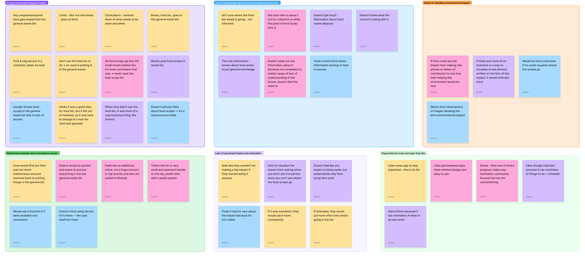
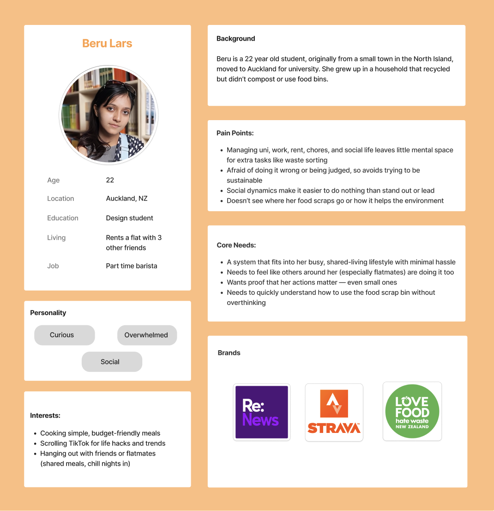
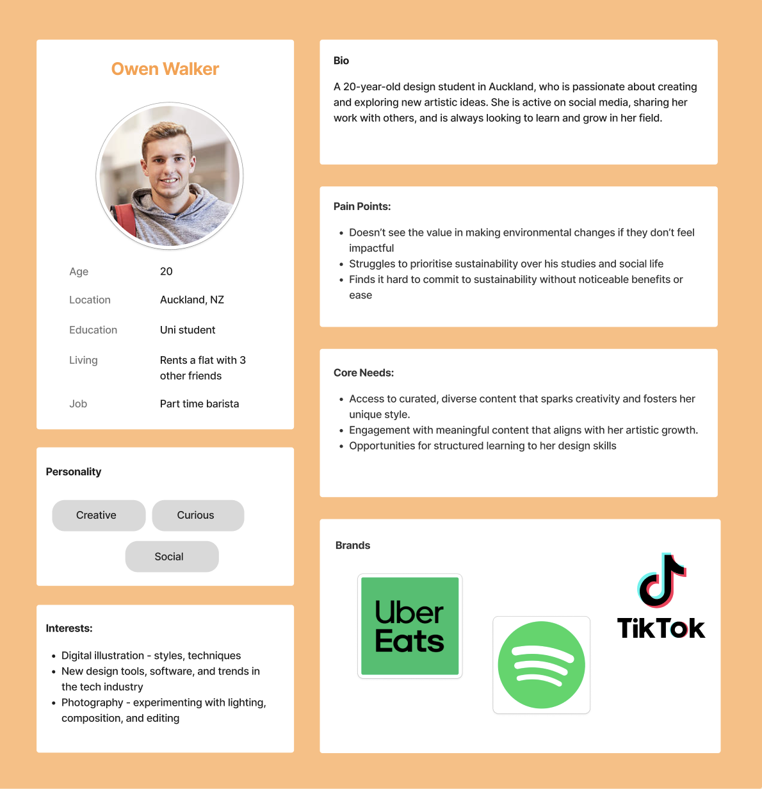
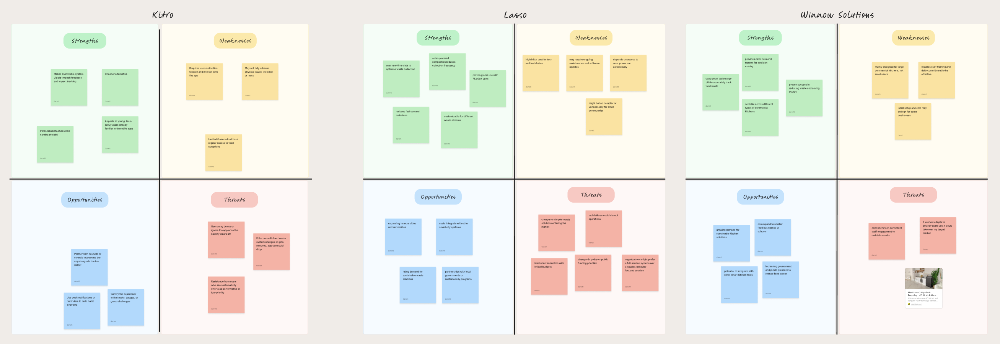
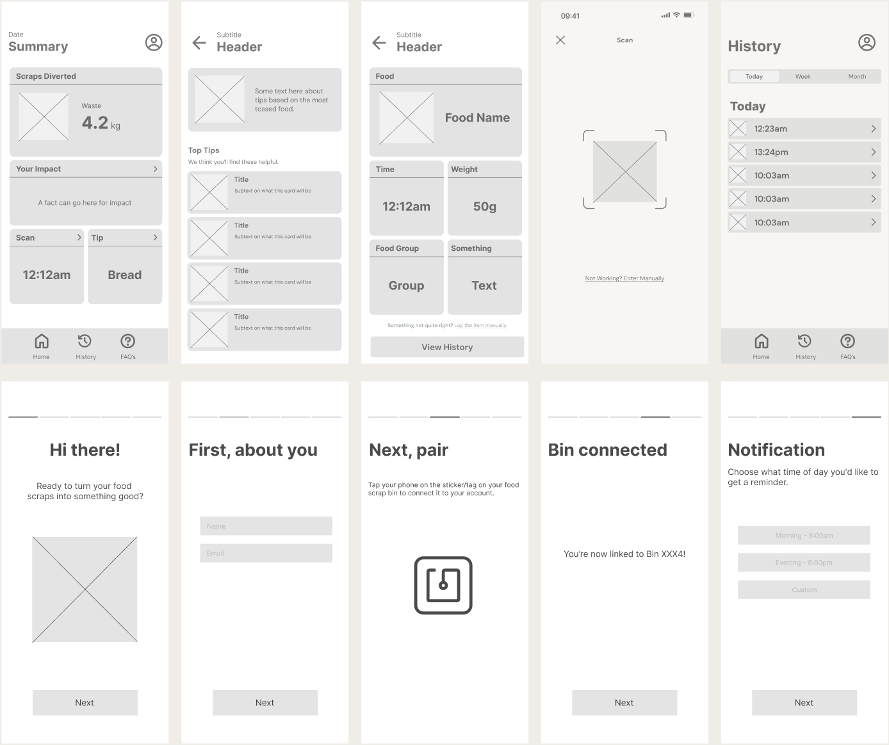

.png)

Challenge
I was tasked with creating and pitching a human-centred social or commercial enterprise in Auckland that uses design to solve a real-world problem and enhance social, cultural, or community well-being.
DISCOVER
Primary research lead my curiosity towards climate action and how ___. INCLUDE STATISTICS HERE
30%
Auckland’s food scraps still end up in landfill.
115,000 tonnes
of food waste end up in landfill
50%
of avoidable waste cut by proper bin use

DEFINE
This is an issue enough. But I wondered: what was there a lack of understanding of? And why does it make it feel unnecessary?
I looked at my own habits. I thought it would eb appropriate to look at further into the habits of people my age.
.png)

So... people do know they should sort. But sorting waste required too much thinking in fast everyday moments. and the friction is enough to make the habit fall apart. Young adults living independently in Auckland, who are environmentally aware but struggles with to use the food scrap bins, due to inconvenience and not seeing their impact
How might we...
Challenge
Goals
drop down for persona's?


CLARIFY
Great! Now I know more about my audience. After, proposing the solution, and did extensive research on competitors through secondary research and
swot analysis

To understand where I can position myself in the market, I did further research on competitors with similar products. I found that most solutions were ___ so I took key features to apply to my solution.

With my new found user insights and competitor analysis, the purpose and features for the service became clear. I noticed gaps in the existing solutions that I could fill with my design, and I was able to define key features and goals for the service that would set it apart in the market, with the target audience in mind.
Key Feature
Personalised onboarding experience that adapts to user needs
Key Feature
Simple, frictionless interaction flow with minimal steps
Goal
Encourage long-term engagement through clarity and ease of use
what there wasnt
Personalised onboarding experience that adapts to user needs
Key Feature
Simple, frictionless interaction flow with minimal steps
Goal
Encourage long-term engagement through clarity and ease of use
CONCEPTUALISE



OUTCOME
A prototype of the service app, and coded using VSCode (image?).


REFLECTION
this project made me realise I’m more interested in understanding people than designing interfaces. I became more drawn to the thinking behind user behaviour. What people do, why they do it, and how those patterns can inform better design decisions. Instead of focusing purely on the final output, I found myself valuing the process of research, observation, and uncovering insight.